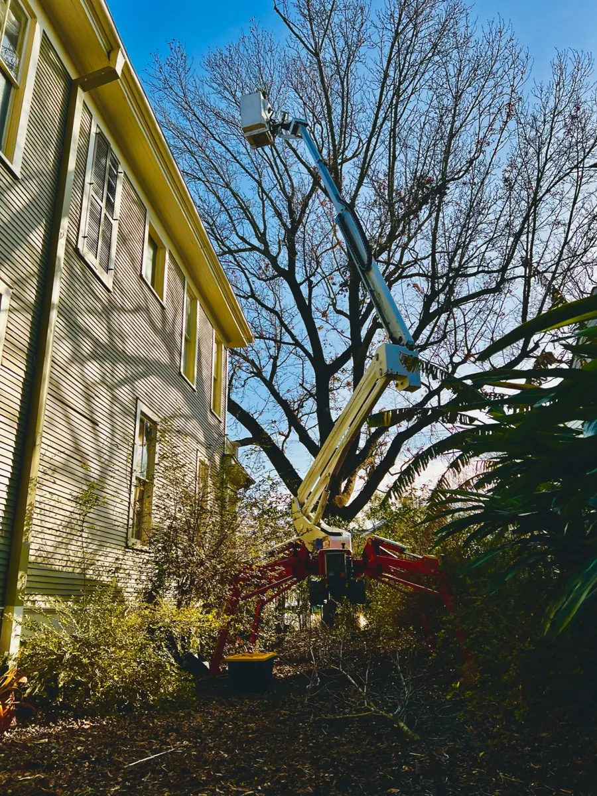

Tree Trimming Techniques Depending on the Type of Property
Each type of property calls for different tree trimming techniques. Here's how the approach changes for suburban yards, commercial sites, farms, public spaces, and wooded land.
Urgent or unsafe?Call an Arborist: (504) 732-0779


Tree Trimming by Property Type
Suburban Backyards
Suburban yards usually have limited space, so the focus is on keeping trees safe while maintaining their shape and appearance.
- Start by removing any dead, damaged, or diseased branches to prevent potential hazards.
- Use pruning techniques like crown thinning to increase light penetration and air circulation through the tree canopy.
- Keep the tree's height and spread in check with crown reduction, and use crown raising to clear space beneath it.
Commercial Establishments
At commercial sites, safety and appearance come first. Trim trees to improve how the property looks while dealing with any risks.
- Remove branches that obstruct signage or interfere with utility lines. Regularly prune lower branches to maintain visibility and accessibility.
- Consider periodic crown reduction to keep the tree size manageable for the property and to prevent potential damage during storms.
Rural Farms
Farms often have large open areas with many tree species. Trimming there focuses on tree health and productivity.
- Prune fruit trees during their dormant season to improve fruit production and control growth.
- Use thinning to remove excess branches and keep proper spacing for sunlight and air circulation. Trim any overhanging branches that could damage structures or get in the way of farm work.
Public Spaces and Parks
Public spaces and parks require tree trimming techniques that prioritize both aesthetics and safety. Regularly inspect trees in these areas to identify any potential hazards, such as diseased or damaged branches.
Follow proper pruning practices, such as removing competing branches, to keep a healthy tree structure. Trim trees along pedestrian paths to keep sightlines clear and prevent accidents.
Wooded Areas and Forests
Tree trimming in wooded areas and forests typically focuses on managing the overall health and growth of the forest ecosystem.
Identify and remove any invasive species or dead trees that could pose a threat to the surrounding vegetation.
Use selective thinning to open light gaps and encourage healthy growth.
On larger wooded tracts, consult forestry professionals so the work stays in balance with the natural habitat.
If you're unsure about the best approach for your property, ask an arborist or tree care professional to look at your trees.

Challenges of Tree Trimming for Various Property Types
Residential Properties
One of the main challenges with residential tree trimming is the close proximity of trees to homes, garages, fences, and neighboring properties. Overhanging or weakened branches can pose a serious risk if they fail, especially during storms.
Another challenge is maintaining visual balance. Homeowners often want trees to look neat and natural without appearing over-pruned. Trimming must improve safety while preserving the tree’s shape and overall appearance.
Plan carefully to avoid removing too much canopy, which can stress the tree and reduce its ability to withstand weather and pests.
Commercial Properties
Commercial properties face additional challenges beyond basic safety. Trees are often located near parking areas, walkways, signage, lighting, and utility lines, increasing the risk of interference and liability.
There may also be local regulations, permits, or property management requirements that affect when and how tree trimming can be performed. In many cases, the scale of work is larger, involving mature trees and expansive landscaped areas that require specialized equipment and coordination.
Knowing What to Remove
Across both residential and commercial properties, one of the biggest challenges is knowing what to remove and what to leave behind. Improper cuts, excessive pruning, or poor timing can weaken trees and create future hazards.
Effective tree trimming for New Orleans Properties requires an understanding of tree structure, growth patterns, and species-specific needs. A trained arborist uses that knowledge to balance safety, appearance, and long-term tree health.

Key Takeaways
- Tree trimming needs vary with property type, available space, and how the area is used.
- Residential trimming focuses on safety, controlled growth, and a clean appearance.
- Commercial trimming puts public safety, visibility, and liability first.
- Farms use trimming to improve access and productivity.
- Parks and public spaces need routine inspections and preventive pruning to protect pedestrians.
- Wooded areas focus on the health of the whole stand instead of individual tree appearance.
- The wrong trimming approach can shorten a tree's life and raise safety risks.
- Get a professional evaluation as tree size, risk, or property complexity grows.
What to Photograph From a Safe Distance
Photos and video show us the tree, the property around it, how we would reach it, and any visible hazards.


Tree down or a broken limb?
Skip the photos and call. Calls are answered 24/7.
(504) 732-0779Office hours: Monday to Friday 7 AM to 5 PM, Saturday 7 AM to 3 PM, closed Sunday.


Ready to Show Us Your Tree?
Show us the tree. An arborist reviews what you send. Photos give us a first look. Some trees need an in-person visit before we can make a final recommendation.